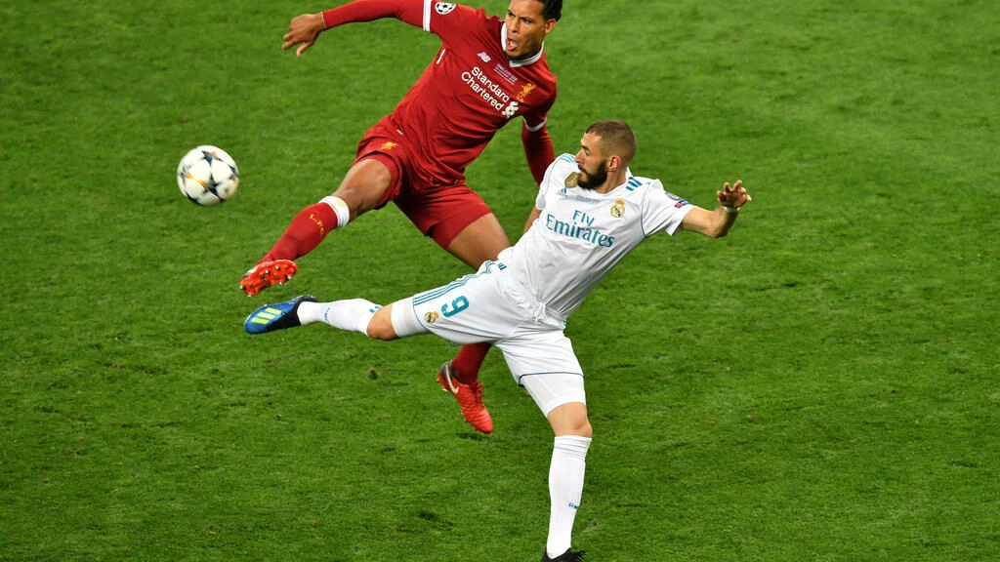
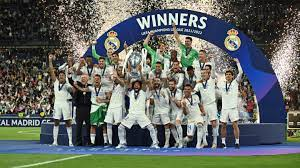
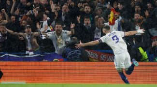
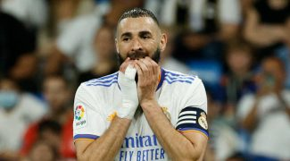

Liverpool-Real Madrid: un match dans le match pour le Ballon d'Or 2022
Football
Real madrid 1-0 Liverpool

Le Real Madrid aura l'avantage de l'expérience Les Madrilènes connaissent par cœur la façon d'aborder ce genre d'événements. On l'a compris, ils ont déjà remporté treize fois le trophée, soit plus du double que n'importe
quel autre club européen. Huit joueurs de l'effectif, dont le capitaine Karim Benzema, vont disputer leur cinquième finale de Ligue des champions.
Le club en a donc vu d'autres mais ça n'empêche pas Carlo Ancelotti, l'entraîneur, de vouer une grande admiration à Liverpool : « C'est un club que je respecte beaucoup parce que l'une des choses que je préfère
dans mon métier, c'est de voir que des stades peuvent pousser derrière leurs équipes. C'est le cas, chez nous au Santiago Bernabeu, mais aussi à Anfield où le public soutient ardemment ses joueurs, c'est magnifique. C'est
spécial de jouer cette finale contre les Reds. » Liverpool veut sa revanche Les Anglais ont, eux, déjà remporté la Coupe d’Angleterre (FA CUP) et la League Cup, deux trophées nationaux, avant de perdre leur bras de fer avec Manchester City pour le gain du Championnat (Premier League). Il a manqué un point aux hommes de Jürgen Klopp pour être sacrés. Ils tenteront de se consoler avec une nouvelle ligne à leur palmarès, la plus prestigieuse. Histoire aussi de
prendre leur revanche sur la finale de 2018 remportée par le Real, au Stade Olympique de Kiev.
Les Reds avaient cédé 3 buts à 1 après avoir prématurément perdu leur star Mohamed Salah, blessé au bout d'une
demi-heure de jeu. Son équipe ne s'en était pas remise et l'Egyptien n'a visiblement pas digéré cet épisode : « C'était le pire moment de ma carrière, j'étais vraiment déprimé à ce moment-là... J'avais pourtant fait une bonne saison,
c'est la pire chose qui puisse arriver à un joueur. Comme footballeur, je n'avais jamais ressenti ce genre de sensation auparavant... En plus c'était la première finale de Ligue des champions pour beaucoup d'entre nous et on a
eu du mal à passer à autre chose. »




Les champions de l'Europe